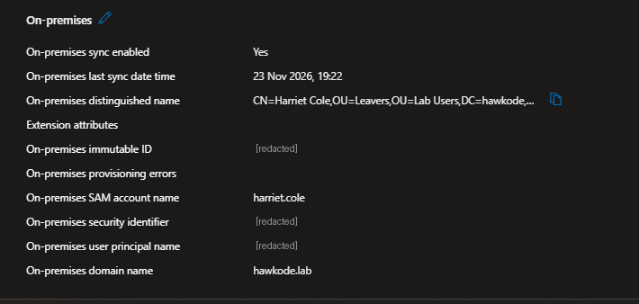

Hybrid Lab
Hybrid Hardening Lab: Windows Server 2025 and Entra Connect
I built a Windows Server 2025 domain controller in a Hyper-V home lab, hardened it with the Microsoft Security Baseline, and measured the result instead of assuming it. Then I synced it to an Entra ID lab tenant with Entra Connect and ran my own IAM automation against it, to prove the hybrid joiner, mover and leaver scripts work against a real AD, not just on paper.
The project covers both sides of my work: infrastructure security (build, harden, scan, find the gaps) and identity (lifecycle automation across AD and Entra ID). Every claim on this page has a command, a scan result or an audit log entry behind it in the repo.
The lab runs on a 16 GB laptop with an evaluation licence and a trial tenant, with fictional users. Only free tools: Hyper-V, Kali Linux and Greenbone (OpenVAS) Community Edition.
Project Snapshot
Overview
What I Built
- Server 2025 DC hardened with the Microsoft Security Baseline
- Before/after Greenbone scans, unauthenticated and authenticated
- A read-only PowerShell config check, scored per checkpoint
- Entra Connect sync, scoped to one OU, password hash sync
- Six hybrid lifecycle tests with my own automation
- Evidence from the console, the scans and the Entra audit log
Skills Demonstrated
- Windows Server and AD hardening (Microsoft baseline, GPO)
- Vulnerability scanning and finding triage
- Measuring security controls, not trusting them
- Hybrid identity with Entra Connect
- Joiner-mover-leaver automation with PowerShell and Graph
- Troubleshooting under real constraints (RAM, module bugs)
Approach
Build, Harden, Measure, Sync, Test
Each phase ends with proof. Hyper-V checkpoints let me scan and test the same DC in its clean and hardened states, so every comparison changes one thing only.
| VM | Role | Size |
|---|---|---|
| DC01 | Domain controller, DNS, Entra Connect (Windows Server 2025) | 2 vCPU, 2-4 GB, 60 GB |
| KALI01 | Greenbone scanner, attacker in the next phase | 2 vCPU, 3-4 GB, 60 GB |
Phase 1 · Harden and Measure
The Baseline, and What a Scan Can’t See
I imported the Microsoft Security Baseline for Windows Server 2025 and linked the DC GPOs. Then I scanned DC01 with Greenbone before and after, unauthenticated and with a domain scan account.
| Scan | Before (clean) | After (hardened) |
|---|---|---|
| Unauthenticated | 1 Medium, 1 Low | 1 Medium, 1 Low |
| Authenticated | 1 High, 2 Medium, 2 Low | 1 High, 2 Medium, 2 Low |
Same results. The finding is the result: Server 2025 already ships with SMB signing required and SMBv1 off, and the baseline’s real changes live inside Windows (NTLM level, LDAP channel binding, UAC, PowerShell logging, audit policy), where a vulnerability scan doesn’t look. A scanner finds missing patches. It can’t prove hardening.
So I wrote Get-HardeningState.ps1, a read-only check of 19 settings the
baseline should change, and ran it on each checkpoint:
| State | Settings at target |
|---|---|
| Clean | 8 of 19 |
| Hardened (baseline) | 16 of 19 |
| Hardened v2 (+ Print Spooler GPO) | 17 of 19 |
Gaps Found
- Print Spooler running on the DC: the baseline leaves it on. Fixed with a GPO, confirmed by a rescan
- Kerberos ticket audit cut to Failure: the baseline drops the success events Kerberoasting detection needs
- LSA protection configured, not active: LSASS still readable after reboot. Open, carried into the attack phase
Security Angle
- Abuse: PrintNightmare and the PrinterBug (T1187), Kerberoasting (T1558.003), LSASS dumping (T1003.001)
- Detect: event 4769 needs success auditing back on; LSASS access events
- Harden: Spooler off on DCs, audit policy above the baseline, LSA protection proven active
Phase 2 · Hybrid Identity
Entra Connect Sync
I installed Entra Connect Sync on DC01 with password hash sync, scoped to a single
Lab Users OU so built-in and admin accounts never reach the cloud. A test
sign-in with the AD password proved password hash sync. I also turned on the AD Recycle
Bin, which the restore test later relies on.
Connect Sync, not Cloud Sync, because the hybrid scripts drive the ADSync module, and only Connect Sync installs it.
Phase 3 · IAM Automation
Six Hybrid Lifecycle Tests
I ran the hybrid scripts from entra-iam-automation on DC01 against one test user, through her whole lifecycle. AD is the source of authority, and each script makes its AD change, runs one delta sync, then finishes the cloud side through Microsoft Graph.
| Test | Result |
|---|---|
| Prep | Read what each script needs before running anything |
| Joiner | New AD user to synced, licensed Entra user in 20 seconds |
| Mover | HR to Finance in AD; dynamic groups re-scoped; leftover AD group access listed for review |
| Leaver | Disabled, password reset, groups removed, sessions revoked, licence removed in 23 seconds |
| Source of authority | Cloud script refused the synced user; Graph refused the edit too |
| Recycle Bin restore | Deleted in AD, restored: same objectGUID, same cloud object, no duplicate |
What Testing Found
- AD and Entra UPNs must match, or the mover and leaver can’t find the user. Fixed with a UPN suffix
- The soft-match guard blocked a joiner whose UPN matched an existing cloud account
- Graph SDK 2.41 fails on Windows PowerShell 5.1 (known assembly bug). Moved the DC to PowerShell 7
- Mover review lists matter: the AD file share group stayed with the user until the leaver removed it
Security Angle
- Abuse: with password hash sync, a leaver’s old password still works in the cloud until the sync lands
- Detect: Entra audit log: Disable account, refresh token revoked, licence change
- Harden: AD first, sync, wait for disabled, then revoke sessions; restore from the Recycle Bin, never recreate



Scope & Honesty
Lab vs Production
Entra Connect on the DC: done to fit in 16 GB. In production it goes on a dedicated member server, treated as Tier 0.
Checkpoints on a DC: safe here because there is one DC. In a multi-DC domain, reverting one causes USN rollback.
Domain: the lab uses the tenant’s onmicrosoft.com domain as the UPN suffix. In production, the AD suffix and the verified domain are the same real domain.
No mailbox: the trial licence has no Exchange plan, so the leaver skipped the shared mailbox step.
Next
Attack and Detect
The gaps from Phase 1 set the next phase: Kerberoasting and LSASS dumping from KALI01 against the hardened DC, detected in its event logs, then the fixes proven with a recheck.